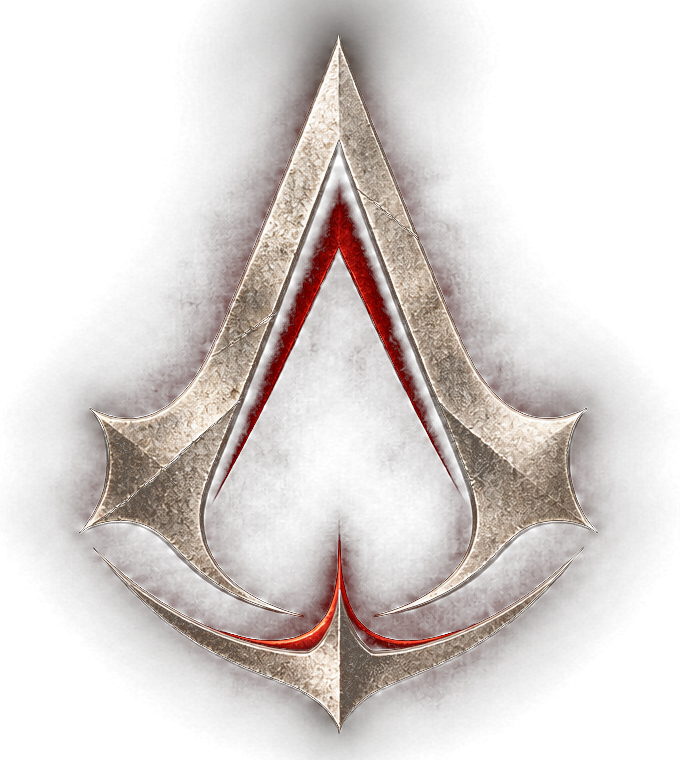

REPORTAJE
Un universo que conecta generaciones
Desde los primeros pasos de Altaïr hasta las aventuras más recientes, repasamos el legado de la saga.
EXPLORAR HISTORIA →
GUÍAS, ANÁLISIS Y CONTENIDO SOBRE TODOS LOS JUEGOS DEL UNIVERSO ASSASSIN'S CREED
EXPLORAR LA SAGA →Descubre novedades, curiosidades y artículos sobre el universo Assassin's Creed.
Desde los primeros pasos de Altaïr hasta las aventuras más recientes, repasamos el legado de la saga.
EXPLORAR HISTORIA →
Conoce al asesino que marcó el comienzo de una de las historias más conocidas de los videojuegos.
CONOCER PERSONAJES →
Descubre una de las épocas históricas que dieron vida a las aventuras de Assassin's Creed.
DESCUBRIR JUEGOS →Detrás de cada época hay personas que cambiaron el curso de la historia.
La primera gran leyenda de la Hermandad.
Una mercenaria en la antigua Grecia.

Uno de los orígenes de la Hermandad.
Organizaciones, artefactos, conspiraciones y secretos. Adéntrate en el universo que existe más allá de los videojuegos.
ENTRAR EN EL UNIVERSOExplora las épocas y civilizaciones que han servido de escenario a la saga.
RECORRER LAS ÉPOCAS →Consejos, coleccionables, curiosidades y secretos para descubrir cada rincón de la saga.
CONSULTAR GUÍAS →Una selección de videojuegos, libros, figuras y artículos para los seguidores de Assassin's Creed.
PRÓXIMAMENTE